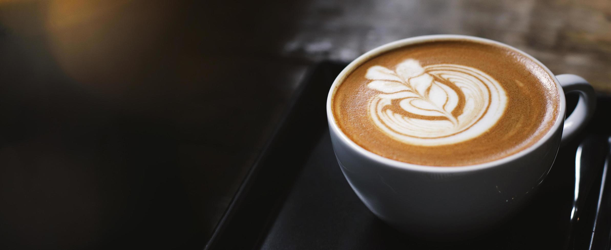

Cafe Bacana
Cafe Bacana

Seja Bem-vindo
Nossa cafeteria é um refúgio acolhedor onde a paixão pelo café se encontra com a arte da hospitalidade. Situada no coração da cidade, somos o lugar perfeito para você relaxar, recarregar suas energias e saborear uma xícara de café excepcional.